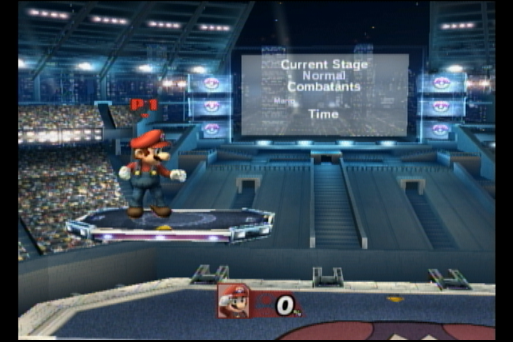
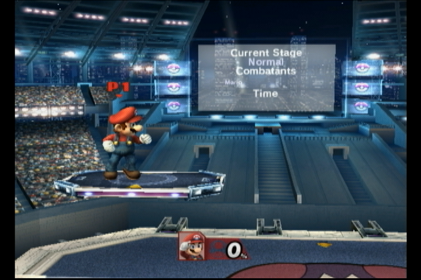
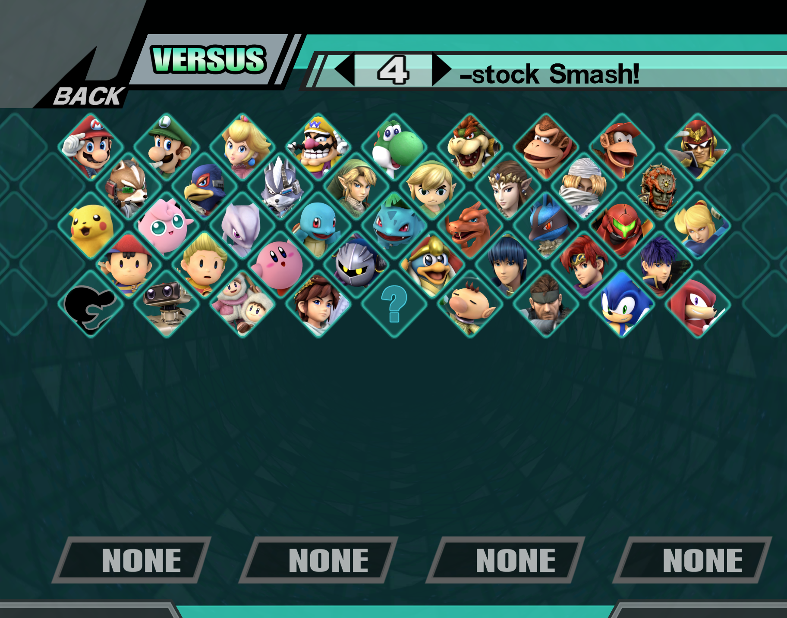

Hey there! Thanks for your interest in recording or streaming Project+! This guide will encompass the large variety of methods for capturing console feed for P+ at a wide variety of price points.
Introductory Knowledge
If this is your first time doing any sort of capture, or working with AV in general, let me lay out a list of terms and pieces of advice before we get started with the guide:
-
Composite:
this is the yellow connector included by default with the Wii, and is the one you’re most likely to see. The cable will also include white and red cables for audio.
-
S-Video:
the next step up from composite, though this is the least common cable to find of the three nowadays. This cable has a circular connector, and splits the video signal of composite into two parts, increasing quality. You’re likely to find cables with S-Video that also include a composite connector, which will be talked about in the
Cheap
section.
-
Component:
Formally known as YPbPr, Component is the highest quality level available for stock Wiis. This is the current most common way to capture Wii games, though further options will be discussed in the
Advanced
section. Unlike with the GameCube, Wii component cables are very cheap and very common.
-
Analog:
the type of video signal that the Wii natively outputs. This fact is the reason why we still use CRTs for tournaments, as only they can take analog input natively!
-
Digital:
the type of video signal newer devices (~mid-2000s and later) use. Some setups will need to use digital signals for either players or capture, which we will cover later on.
-
480i:
the video quality the Wii outputs by default, and is overwhelmingly the most common for tournament use. All setups will use this format until the
Advanced
section.
-
480p: the higher quality video format the Wii can output, only available for use with component cables officially. This format is a significant quality increase from 480i, as it doubles the line count. As mentioned above, we’ll talk about taking advantage of this format in the
Advanced
section.
-
Splitter:
a general term for devices that will separate video/audio signals into multiple outputs. A note for this is that you’ll want to only use
powered
splitters, especially for any analog signals!
-
OBS Studio:
a piece of capture software for various desktop operating systems. I fully recommend using this for any recording or streaming you may do, as it is free, feature-rich, and stable.
Cheap/Beginner
On a budget, or just starting up a weekly? No problem! There are a few ways to grab easy console capture in good quality for the price. The simplest way to do this is to use one of these dual
Composite/S-Video AV cables; this way, composite can go to the TV, while S-video is sent to a device like
this one
and captured on the PC side of things. I’ve linked from Amazon for convenience for those, but these can be found across the internet with a little bit of searching.
Capturing with S-Video is much better than using composite, as it splits the video data into two separate signals. It’s debatably a bigger jump than going to component, and is by far the cheapest method for getting a good quality stream. Capture samples below (grabbed with a RetroTINK 2X-M):
Composite (
https://imgur.com/a/bDFydTf
):

S-Video (
https://imgur.com/a/CISGTVo
):

Intermediate
Want to upgrade to the best native output for the Wii? It’s easier than you’d think! This part of the guide will cover getting the best of the best without any hardware modification. You'll need a few things for this setup to work:
-
CRT with Component input: might be obvious, but the signal will need to get to the players as well. CRTs generally started including these inputs in the early to mid 1990s, so anything from that time onwards has a chance of including them. I’d personally recommend early 2000s-era Sony Trinitrons, as those not only have the best tubes, but will also likely have component inputs. Make sure to avoid anything that calls itself an EDTV, though, as these are usually digital internally and may introduce lag. If it has a tube, it’s generally fine.
-
Component cables: these will be needed to grab the output from the Wii. These are still quite cheap on places like Amazon, and can also be found locally still if you’re lucky.
These
should work just fine, but for best quality I’d recommend the
HD Retrovision ones.
-
Component splitter:
this will be needed to send your Wii’s output to both the CRT and your capture device, as well as any other places video or audio may need to be sent. I’d personally recommend
this one, but units from the component era (early-mid 2000s) are generally good picks as well. Make sure the splitter you buy is
powered!
-
Upscaler:
this is where the fun begins! An upscaler will convert your analog video signal from 480i to a format that capture cards will accept, output over HDMI. I’ll split these into their own tiers as well.
-
GBS-8200
:
a bare bones scaler originally intended for arcade boards, this scaler fits in as a low-end option. This box will output a VGA signal though (like you’d find on an old PC monitor), so you’ll need a
VGA to HDMI adapter
to use it with a capture card. This option trades cost for a bit of required manual adjustment to get optimal video quality, so keep that in mind if you go this route.
-
RetroTINK 2X-Pro
:
the middle of the pack in terms of upscalers, this is what many recording setups at major tournaments will use. While it's quite the price increase compared to the GBS, the 2X-Pro is a much simpler plug-and-play solution. The 2X-Pro will line double content to 480p, though don't be fooled - no method of deinterlacing will look nearly as clean as a direct 480p signal. For better results, you'll want to move up to one of the two pricer scalers.
-
OSSC
:
the OSSC is the first scaler that I'd recommend that can upscale the Wii's signal to 1080p. While it's cheaper than the next scaler we'll talk about, it is similar to the GBS in that it requires some manual tweaking and setup to get your feed configured correctly.
-
RetroTINK 5X-Pro
: the current top of the line scaler for analog signals. With its plethora of inputs, easy 1080p scaling, and excellent handling of 480i, the 5X is what I'd recommend for getting the best quality out of your 480i signal. Many major tournaments these days use the 5X as their upscaler.
-
Blackmagic Design Intensity Shuttle
:
an option I would consider as high risk, high reward. While this does not scale footage on its own, the main draw of this device is that it can take in the Wii's 480p signal, and convert that to 480i for the CRT to receive whole retaining 480p capture! However, not only is this item now out of production, its software is also notoriously finicky and unreliable. This device also works best in conjunction with a separate scaler - which may be a dealbreaker price-wise for many.
Intermission: Running on Monitor
CRT isn't the only option for running tournaments these days. If your situation makes running on monitors easier (or required), this can be done.
I would
still recommend running on CRT if possible,
as monitors will feel different to most players than CRT will. Using a monitor will, on average, introduce half a frame of input lag when set up properly; some players may also be able to feel or see the difference in signal processing of LCD monitors compared to CRTs.
-
Make sure you're running on good monitors:
not all monitors are built equal! Anything on the mid-range of gaming monitors should be fine, though. Generally, ASUS and ViewSonic are solid brands, and anything 120hz or over will be serviceable.
-
Get reliable Wii2HDMI units: like monitors, not all of these are built equal, either.
These ones
are known to be good, but most units on places such as Amazon should be fine as well. Make sure to avoid any with "720p/1080p" switches on them!
-
Swap your Wii to output 480p
to make sure you're getting the best output out of these devices!
- For capture, most if not all regular capture cards will work. I'd recommend the
AverMedia Live Gamer Portable 2
and the
Elgato HD 60S+.
Advanced
Interested in getting the absolute best capture quality out of your console? This is the section for you!
This section will focus primarily around getting 480p output from your Wii, while still having players compete on CRT.
-
Finding a compatible CRT: Unfortunately, not many consumer CRTs out there will support 480p, as it only became a widely used standard right at the end of the CRT's mainstream production. If you're lucky, you can find a higher end PVM (Production Video Monitor) or BVM (Broadcast Video Monitor) for this purpose. However, the more likely (and much cheaper) option is to get a PC CRT monitor. These were everywhere in the 90s and early 2000s, so there are plenty of units still out in the wild. I'd recommend checking Facebook Marketplace and Craigslist on a regular basis if you're looking to get one; they frequently pop up listed for low prices (or even free) on those sites. The rest of this section will work under the assumption that you're using this method.
-
Getting the Wii's video to your PC CRT:
many PC CRT monitors have a hardwired VGA as their only video input, which means you'll need to convert the Wii's output to that format. If they're in stock, I recommend the handmade adapters from
this seller on eBay, but the
GARO Lite
should also be a good choice. Refer to the
Intermediate
section for splitting your component signal to both your CRT and capture device.
-
Capturing your 480p signal:
this is the part that gets expensive! Only the latter two scalers mentioned in the
Intermediate
section will accept a 480p signal, which means you'll be spending a bit of money to get your capture going. Alternatively, you could split your VGA signal to both the monitor and to HDMI, though you'll only get unscaled 480p that way, which I wouldn't recommend with analog video.
-
AVE-HDMI, the cream of the crop
:
the best possible option you can use as of writing is having the AVE-HDMIinstalled in your console. This is a hardware mod that will pull video signal directly from the Wii's GPU, and output a pure digital signal through a mini HDMI port on the back. Though expensive, this will remove the need for both a component splitter and an external scaler. Since both the mini HDMI and the native component output can be used at the same time, there's no need to split the signal externally. Also, since the HDMI output is purely digital, no scaler is needed, as scaling digital video is a much simpler process that can be handled exclusively by your capture card and/or OBS. This is the option that I now use, and you can see video samples in the
Blacklisted 8 stream VODs.
Capturing and Recording Your Feed
Capture is a lot simpler than doing the upscaling and getting it to your players; any traditional capture card should work in most cases. The
AverMedia Live Gamer Portable 2
and the
Elgato HD 60S+
mentioned earlier are both good options, though Elgato products may not always play nice with RetroTINK products. To record and stream, you’ll want to use
OBS Studio
. You can add your game capture by adding a “Video Capture Device” source, then selecting your capture card. For proper scaling in the normal (4:3-like) aspect ratio, I’d recommend using a screenshot from Dolphin, then attempting to match it manually via scaling in OBS. Here’s one for your use (https://i.imgur.com/XiaD5Zd.png):

If you’re on monitor and using PM’s widescreen mode, no adjustment should be necessary from your capture device.
For spicing things up, a great starting point is
ilikepizza107’s Stream Tool. This will give you a clean layout for both regular and widescreen views. This tool is also incredibly customizable with enough know-how, so you can make some pretty derivative layouts with its feature-rich base! More in-depth instructions for usage can be found on the GitHub page.